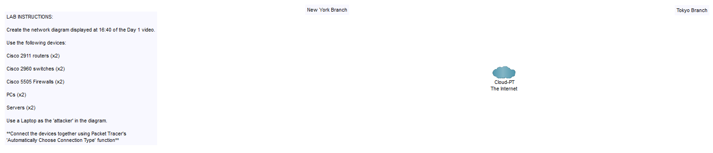

Packet Tracer
Download the Cisco network simulation software called Packet from https://www.netacad.com/courses/packet-tracer.
After signing up link to download Packet Tracer app:
https://skillsforall.com/resources/lab-downloads
Packet Tracer is a CLI to configure routers & switches. It simulates how you would build a network; think of it almost like a text editor where you can run tests, and then configure your networks with real-world devices!
Once you follow the steps and download the app, you can then download the zip file which will have instructions on how to set up our first network.
When you open the app for the first time it will prompt you for your Cisco Network Acadmy / Cisco Skills For All login details.
You will need to extract the files in order to open them in your Packet Tracer. When you open the file you should see some lab instructions to your left and some icons to the right. This is the initial layout which we will build our network from.

Packet Tracer dashboard
Before we begin, lets take a moment to study the some of the buttons on the dashboard.

Here is where you can select network devices & end host devices for the network you build
Follow the steps below to create your first network:
Add Routers

Network Devices > Routers > 2911 router

Place a router in each branch
Add Firewalls

Network Devices > Security > 5505 firewall

New York firewall is outside the network and Tokyo is inside the network
Add Switches

Network Devices > Switches > 2960 switch

Add a switch in each branch's LAN
Add End Hosts

End Devices > End Devices > PC

2x PCs in the New York LAN

End Devices > End Devices > Server

2x servers in the Tokyo LAN
Add Attacker

End Devices > End devices > Laptop

Attacker placed, with names changed
Add Connections
Now we will add the cables to the network nodes. Because we haven't covered all the different cable types, we will use the connection key that automatically assigns the right connection to the network node. Even though this is a very useful tool, it is still very cruicial for you to know and understand the roles of all the different cables.

Connections > Connections > Automatically Choose Connection Type

These cable connections create a functioning network
- New York Branch
- Connect the 2x PCs to the switch then connect the switch to the router; connect the router to the firewall, then the firewall to the internet.
- Tokyo Branch
- Connect the 2x servers to the switch, connect the switch to the firewall, then connect the firewall to the router before connecting to the ineternet.
- Attacker
- We then connect the attcker to the internet.
REMEMBER !!
- You need to sign up to the Cisco Network Acadamy or the Cisco Skills For All to be able to download and use the Packet Tracer app.
- You will need your login details to use the full features. You can use it without your login details however it is only available for 3x months.
- You can use the Automatically Choose Connect Type button when assigning the connections.